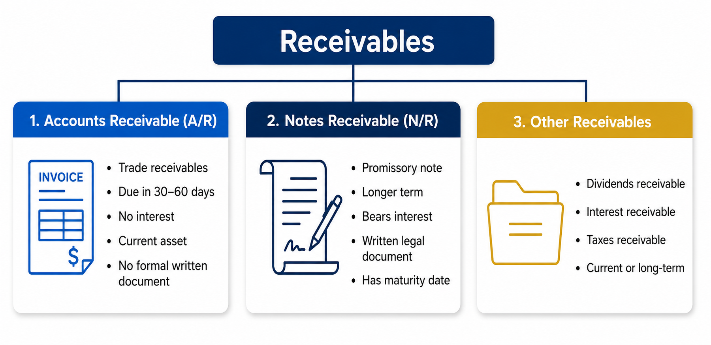
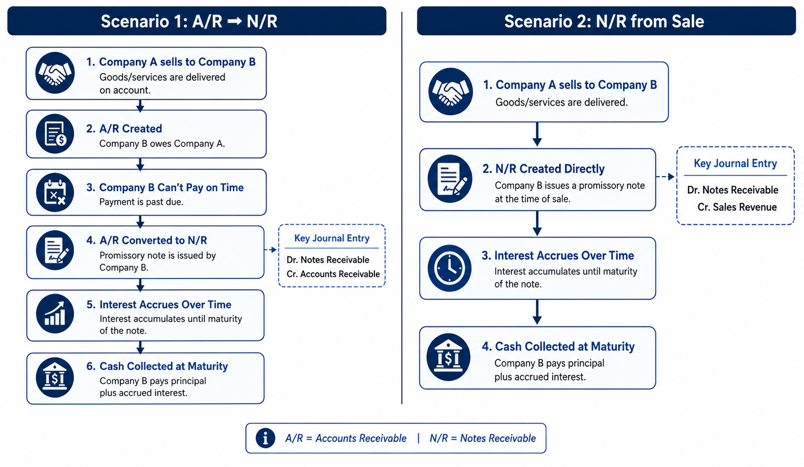
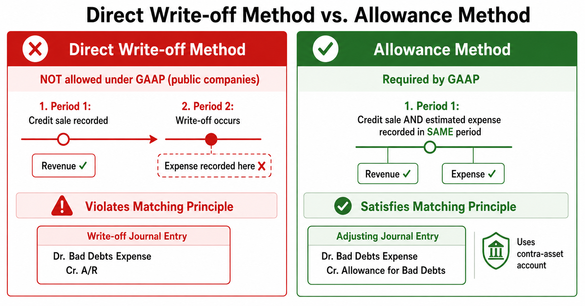
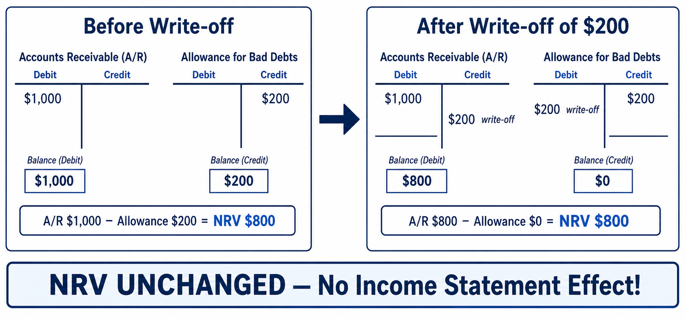
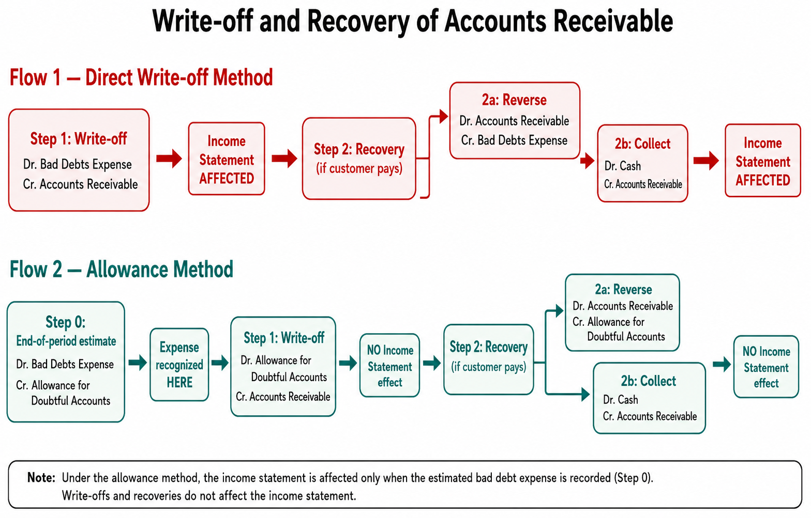
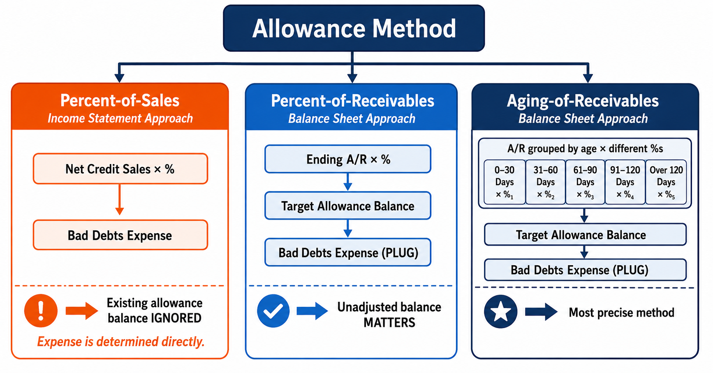
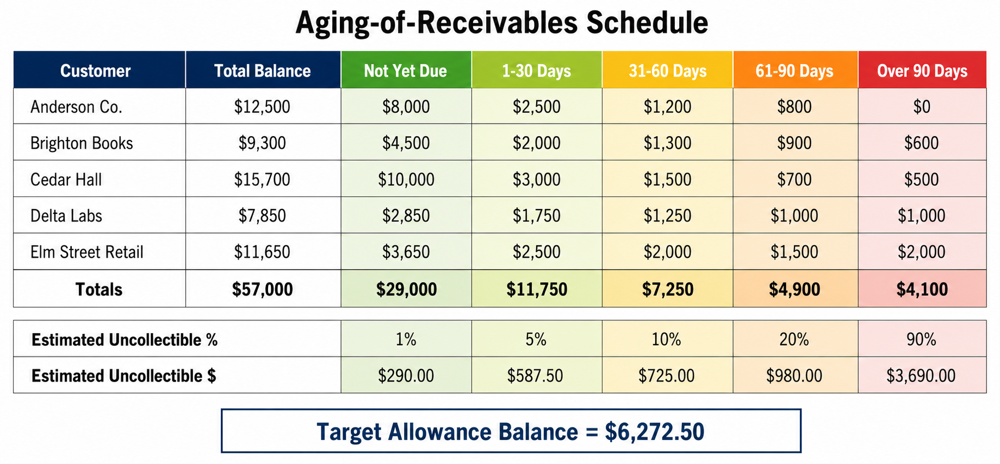
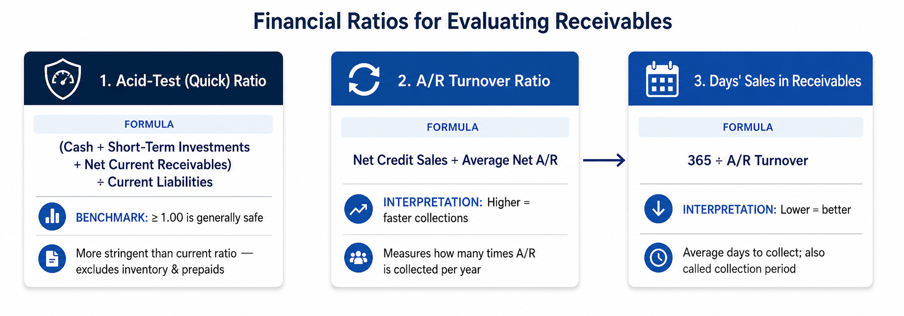

Accounting for Accounts Receivable, Bad Debts, Notes Receivable, and Financial Analysis
A receivable occurs when a business sells goods or services to another party on account (on credit). It is a monetary claim—a right to receive cash in the future from a current transaction. The party who receives the receivable is the creditor; the party obligated to pay later is the debtor.
There are three main categories of receivables:
Accounts Receivable (A/R) — Also called trade receivables. Represents the right to receive cash from customers for goods or services performed. Generally collected within 30–60 days. Reported as a current asset on the balance sheet. Typically does not bear interest; instead, companies may offer early-payment discount terms.
Notes Receivable (N/R) — Also called promissory notes. A written promise to pay a fixed amount of principal plus interest by a certain maturity date. Usually have longer terms than accounts receivable and are evidenced by a legally binding written document.
Other Receivables — Any receivable that is not a trade receivable or a note receivable. Examples include dividends receivable, interest receivable, and taxes receivable. Classified as either current or long-term depending on when they are due.

When a company sells goods or services on account, it records a debit to Accounts Receivable and a credit to Sales Revenue. Importantly, the journal entry must specify the individual customer—each customer’s balance is tracked in a subsidiary ledger, while the combined total is recorded in the Accounts Receivable control account.
When cash is collected, the entry reverses the receivable: debit Cash and credit Accounts Receivable for the specific customer.
A critical element of internal control is the separation of cash-handling and cash-accounting duties. The credit department should have no access to cash. If the same person can both approve write-offs and handle cash, a corrupt employee could claim a customer’s account has been written off—even though the customer actually paid—and pocket the cash. Separating these duties prevents such fraud.
Companies must wait to receive cash from credit sales, and some accounts are never collected. Two strategies help mitigate this risk:
There are two common scenarios involving notes receivable. In the first, an existing account receivable is converted into a note receivable. In the second, a note receivable is created directly from a sale.
Suppose Company A sells a product to Company B on account. Company B is expected to pay within 30–60 days. However, Company B is short on cash and cannot pay by the due date. To buy more time, Company B issues a promissory note to Company A, promising to pay the original amount plus interest at a future date. Company A swaps the account receivable for a note receivable:
This entry removes the balance from Accounts Receivable and establishes the new Note Receivable. Over time, interest will accrue on this note.
Instead of starting with an account receivable, a company might make a sale and immediately receive a promissory note. Over time, the company recognizes interest revenue as it accrues. When the due date arrives, the company collects the maturity value (principal plus interest):

In practice, a company deals with many customers. When you extend credit to multiple customers, it is virtually impossible to collect every single dollar. Some customers will default and not pay what they owe. Therefore, companies must use their best judgment and historical data to estimate how much of their accounts receivable will go uncollected.
If a company has $1,000 in receivables but expects $200 will never be collected, reporting the full $1,000 would overstate assets. The principle of conservatism requires that a company not overstate its assets or revenues and should timely recognize potential losses. Reporting the full $1,000 when $200 is expected to be uncollectible would be a misstatement.
There are two methods to deal with uncollectible accounts: the Direct Write-off Method and the Allowance Method. Only the allowance method is permitted under GAAP for public companies.
Under the direct write-off method, a company recognizes Bad Debts Expense only when a specific customer’s account is definitively determined to be uncollectible—that is, when the company is 100% sure it will never collect. At that point, the account is written off and the company stops pursuing collection.
If a customer whose account was written off unexpectedly pays, the company must perform two steps:
The income statement effect: reversing the Bad Debts Expense in Step 1 decreases total expenses and increases net income for the period by $200.
The direct write-off method violates the matching principle, which requires that expenses be recognized in the same period as the revenues they helped generate. Under this method, a credit sale may be recorded in Period 1 but the bad debt expense is recorded in Period 2 (when the write-off occurs). This disconnects the expense from the revenue it relates to.
Result: Net income is overstated in Period 1 and understated in Period 2. Accounts receivable is also overstated in Period 1. For these reasons, the direct write-off method is only acceptable for companies with very few uncollectible receivables (small, non-public businesses).
Under the allowance method, instead of waiting for an actual write-off, the company estimates Bad Debts Expense at the end of each accounting period through an adjusting entry. This matches the anticipated loss with the period’s sales revenue, satisfying the matching principle.

Assume a company has $1,000 in credit sales and historical records indicate that 20% will be uncollectible. At the end of the period, the company records:
Allowance for Bad Debts (also called Allowance for Doubtful Accounts) is a contra-asset account. Because it is a contra-asset, its normal balance is a credit—the opposite of an asset. It reduces the Accounts Receivable balance to its net realizable value on the balance sheet.
Why not directly credit Accounts Receivable? Because the A/R control account is composed of specific subsidiary customer accounts, and at the time of the estimate, the company does not yet know which specific customer will default. The Allowance account serves as a holding place for this aggregate estimated reduction.
Net Realizable Value is the actual amount of cash the company realistically expects to collect. It is calculated as:
\[\text{Net Realizable Value} = \text{Accounts Receivable} - \text{Allowance for Bad Debts}\]
On the balance sheet, the company reports the gross Accounts Receivable balance, then subtracts the Allowance for Bad Debts to show the NRV:
Under the allowance method, the Bad Debts Expense has already been recognized through the adjusting entry. Therefore, when an actual write-off occurs, the company does not record any further expense. Instead, it simply reduces both the Allowance and the Accounts Receivable:
Both accounts in the write-off entry (Allowance for Bad Debts and Accounts Receivable) are balance sheet accounts. There is no income statement effect at the time of an actual write-off under the allowance method.
This is a key concept: the actual write-off does not change the Net Realizable Value.

If the actual write-off is greater than the allowance balance (e.g., write-off $300 but allowance is only $200), the entry is the same—debit Allowance, credit A/R. This creates a temporary debit balance of $100 in the Allowance account, meaning the original estimate was too low. This debit balance is corrected at the next period-end adjusting entry. For instance, if the target ending balance is zero, the adjusting entry would be: debit Bad Debts Expense $100, credit Allowance $100. The write-off entry never directly touches Bad Debts Expense under the allowance method.
If a previously written-off customer unexpectedly pays, the company follows two steps—similar to the direct method, but using the Allowance account instead of Bad Debts Expense:
Because all accounts involved are balance sheet accounts (A/R, Allowance, Cash), this recovery has no net effect on the income statement.

Under the allowance method, the key question is: how much should the Bad Debts Expense be? Companies estimate this based on past experience, industry data, and economic conditions. There are three methods:

The percent-of-sales method computes Bad Debts Expense directly as a percentage of net credit sales for the period. It is called the income statement approach because it focuses on an income statement item (revenue) to calculate another income statement item (expense).
\[\text{Bad Debts Expense} = \text{Net Credit Sales} \times \text{Estimated \%}\]
Smart Touch Learning has net credit sales of $60,000. Past experience suggests 0.5% will be uncollectible.
\(\text{Bad Debts Expense} = \$60{,}000 \times 0.005 = \$300\)
Important: Under the percent-of-sales method, any existing unadjusted balance in the Allowance account does not affect the calculation of the current period’s Bad Debts Expense. The $300 is recorded regardless of the allowance balance.
The percent-of-receivables method first calculates the target ending balance of the Allowance account, and then determines the Bad Debts Expense as the “plug” figure needed to reach that target. It is called the balance sheet approach because it focuses on a balance sheet item (A/R) to determine the proper balance of another balance sheet item (Allowance).
Ending A/R = $6,375. Estimated uncollectible = 4%. Unadjusted Allowance balance = $55 credit.
\(\text{Target ending balance} = \$6{,}375 \times 0.04 = \$255\) (credit)
What if write-offs during the period exceeded the beginning allowance balance, leaving a debit unadjusted balance of $55? The target is still a $185 credit.
To move from a $55 debit to a $185 credit requires a total credit adjustment of $240. This $240 is the Bad Debts Expense for the period.
Rather than memorizing formulas, draw the T-account for the Allowance account. Place your target ending balance where it belongs (credit side). Place your unadjusted balance where it currently sits. The gap between them is your Bad Debts Expense. This visual approach works every time, regardless of whether the unadjusted balance is a debit or a credit.
The aging-of-receivables method is similar to the percent-of-receivables method—both are balance sheet approaches. The difference is that instead of applying a single percentage to all receivables, the aging method groups individual accounts by how long they have been outstanding and applies different uncollectible percentages to each age category. The longer an account is past due, the higher the estimated uncollectible rate.
| Age Category | Receivable Amount | Estimated % | Estimated Uncollectible |
|---|---|---|---|
| Not yet due | $3,000 | 1% | $30 |
| 1–30 days past due | $1,200 | 5% | $60 |
| 31–60 days past due | $500 | 10% | $50 |
| 61–90 days past due | $200 | 20% | $40 |
| Over 90 days past due | $50 | 90% | $45 |
| Total | $4,950 | — | $225 |
The total of $225 becomes the target ending balance of the Allowance for Bad Debts. From there, the process is identical to the percent-of-receivables method: compare the target to the unadjusted balance and calculate the Bad Debts Expense as the plug figure.

| Feature | Percent-of-Sales | Percent-of-Receivables | Aging-of-Receivables |
|---|---|---|---|
| Approach | Income Statement | Balance Sheet | Balance Sheet |
| Calculates Directly | Bad Debts Expense | Target Allowance Balance | Target Allowance Balance |
| Base for Calculation | Net Credit Sales | Ending A/R (single %) | Ending A/R (by age group) |
| Unadjusted Allowance Balance | Ignored | Used to find the plug | Used to find the plug |
| Precision | Moderate | Good | Best (most detailed) |
As discussed in Section 1, a note receivable differs from an account receivable in two key ways: it is evidenced by a formal written document (a promissory note), and it bears interest. Notes receivable typically have longer terms than accounts receivable.
The key takeaway is that because a note bears interest, the company holding the note must recognize interest revenue as it accrues over time. When the note is held across accounting periods, an adjusting entry is needed at year-end to record the interest earned so far:
When the due date (maturity date) arrives and the maker pays, the company collects the maturity value—the sum of the original principal plus all accrued interest. The journal entries for the two receivable scenarios (converting A/R to N/R, and receiving N/R directly from a sale) were covered in Section 2.
Balance sheet data provide useful insights into a company’s ability to collect receivables and manage liquidity. Three key ratios are especially relevant:
Measures a company’s ability to pay current liabilities using only its most liquid assets (“quick assets”). More stringent than the current ratio because it excludes inventory and prepaid expenses.
A ratio of 1.00 or higher is generally considered safe.
Measures how many times a company collects its average receivables balance during a year. A higher ratio indicates faster cash collections.
Average Net A/R = (Beginning A/R + Ending A/R) ÷ 2
Indicates how many days it takes, on average, to collect an account receivable. Also called the collection period. The shorter the better—it means the company can use its cash more quickly.

Using Sears Holdings Corporation data (amounts in millions):
Note: Net sales is often used instead of net credit sales because most companies do not report the level of detail needed to determine net credit sales separately.